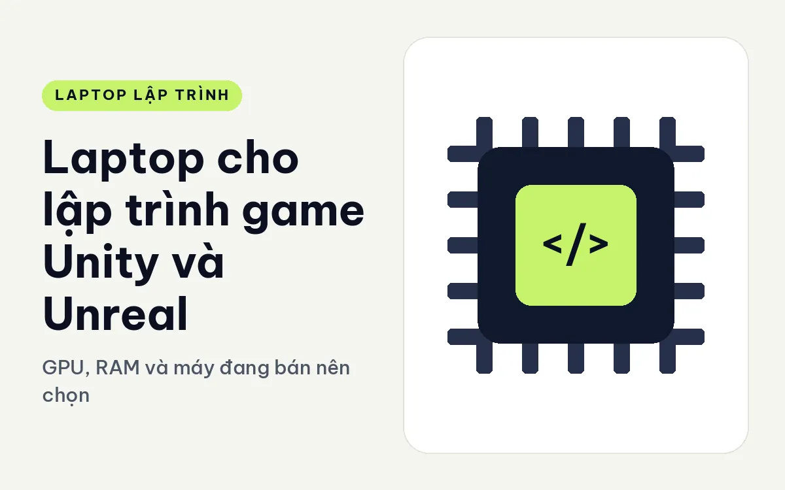
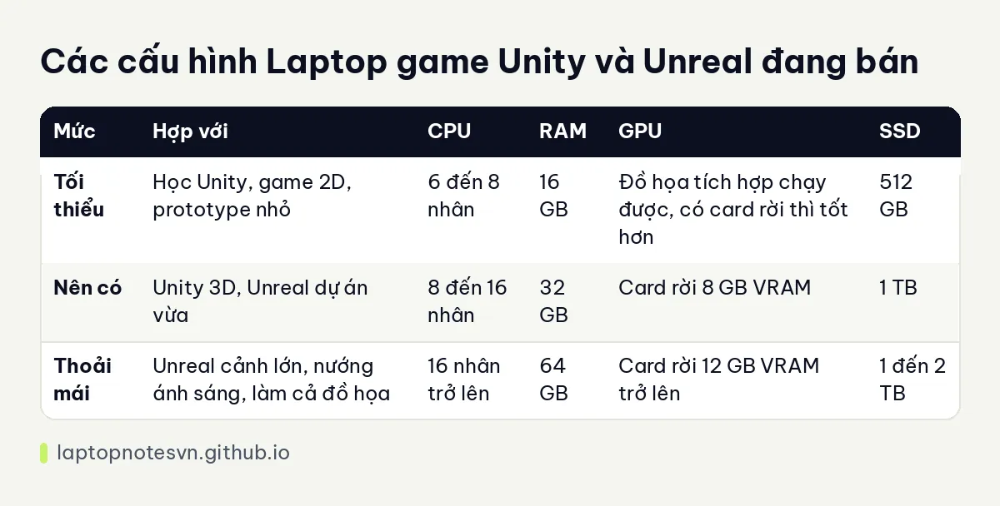

Laptop cho lập trình game Unity và Unreal - GPU, RAM và máy đang bán nên chọn

Làm game bằng Unity hay Unreal khác hẳn viết web. Bạn vừa gõ code vừa mở engine, kéo thả cảnh, nhập tài nguyên, nướng ánh sáng rồi chạy thử game ngay trong cửa sổ editor. Mỗi việc đó đè lên một bộ phận khác nhau của máy, nên cấu hình chọn theo thói quen code web thường bị hụt ở đúng chỗ cần nhất.
Bài này đi qua những phần cứng engine game dùng nhiều, đưa bảng cấu hình theo ba mức và nêu hai máy đang bán hợp với việc này. Các mức RAM, VRAM là kinh nghiệm tư vấn chung, dự án của bạn có thể nhẹ hoặc nặng hơn.
Phần cứng engine game dùng nhiều nhất
Thứ đầu tiên là GPU. Cửa sổ Scene của Unity hay Viewport của Unreal vẽ lại cảnh liên tục, và khi bấm Play thì game chạy thêm một lần nữa ngay trong editor. Card đồ họa rời có VRAM đủ rộng giúp cảnh có nhiều texture, mô hình và hiệu ứng vẫn quay mượt. Đồ họa tích hợp chạy được dự án 2D hoặc cảnh 3D đơn giản, nhưng với Unreal thì sẽ nhanh chóng chạm trần.
Thứ hai là CPU nhiều nhân. Biên dịch shader, nhập tài nguyên, build và nướng ánh sáng đều chia việc ra nhiều luồng. Dự án Unreal lần đầu mở thường biên dịch shader khá lâu, lúc đó số nhân và khả năng giữ xung lâu của máy quyết định bạn ngồi chờ bao nhiêu phút.
Thứ ba là RAM. Editor, IDE như Visual Studio hoặc Rider, trình duyệt tra tài liệu và các công cụ vẽ hay dựng âm thanh chạy cùng lúc. Unreal ngốn bộ nhớ nhiều hơn Unity, và dự án có nhiều cảnh lớn thì 16 GB khá chật.
Cuối cùng là SSD. Thư mục tài nguyên của game có thể lên đến hàng chục GB, thư mục cache của engine cũng phình ra theo thời gian. Ổ nhỏ sẽ đầy rất nhanh, và ổ chậm kéo dài thời gian mở dự án.
Bảng cấu hình gợi ý cho lập trình game Unity và Unreal
| Mức | Hợp với | CPU | RAM | GPU | SSD |
|---|---|---|---|---|---|
| Tối thiểu | Học Unity, game 2D, prototype nhỏ | 6 đến 8 nhân | 16 GB | Đồ họa tích hợp chạy được, có card rời thì tốt hơn | 512 GB |
| Nên có | Unity 3D, Unreal dự án vừa | 8 đến 16 nhân | 32 GB | Card rời 8 GB VRAM | 1 TB |
| Thoải mái | Unreal cảnh lớn, nướng ánh sáng, làm cả đồ họa | 16 nhân trở lên | 64 GB | Card rời 12 GB VRAM trở lên | 1 đến 2 TB |
Nếu còn phân vân về chuyện RAM, bạn có thể đối chiếu với bài lập trình viên cần bao nhiêu RAM, trong đó mỗi mức 16, 32 và 64 GB được chia theo từng kiểu công việc.

Máy còn hàng hợp với lập trình game Unity và Unreal
Gọn nhất trong nhóm có card rời là Lenovo ThinkPad T1G Gen 8 (2026). Màn hình 16 inch, card GeForce RTX 5060 8GB GDDR7 ở bản vào cửa và RTX 5070 8GB ở bản cao, CPU Core Ultra 7 265H hoặc Core Ultra 9 285H đều 16 nhân. Trang mô tả ghi máy nặng khoảng 1,84 kg và RAM chuẩn LPCAMM2 nên nâng cấp được về sau. Bản cao có 64GB RAM, SSD 2TB và màn OLED 3.2K, bản thấp có 32GB RAM và SSD 512GB.
Với bản 512GB, bạn nên tính chuyện gắn thêm ổ hoặc chuyển tài nguyên ra ổ ngoài, vì một dự án Unreal đầy đủ ngốn dung lượng khá nhanh. Điểm cần nhớ nữa là công suất card ở máy này được giữ vừa phải để máy gọn, nên nó hợp người làm game kiêm đi lại hơn là người cần nướng ánh sáng suốt ngày.
Nếu máy chủ yếu đặt trên bàn thì DELL Pro Max 16 Plus MB16250 - Mobile Workstation (2025) đáng cân nhắc hơn. Máy dùng CPU Core Ultra 7 265HX hoặc Core Ultra 9 285HX với 20 đến 24 nhân, RAM DDR5 32GB hoặc 64GB, card RTX PRO từ 1000 đến 4000 với 8 đến 16GB GDDR7. Mô tả của máy cho biết tản nhiệt ba quạt và cửa bảo trì ở đáy để tháo RAM, SSD nhanh. Đổi lại, máy nặng khoảng 2,55 kg nên mang đi mỗi ngày sẽ thấy nặng tay.
Mẹo dùng máy hằng ngày
- Cài engine và đặt thư mục dự án trên SSD, không để trên ổ ngoài chậm, vì engine đọc ghi rất nhiều file nhỏ.
- Cắm sạc khi mở editor làm việc nặng, và đặt máy chế độ hiệu năng cao để CPU, GPU không bị hạ xung do tiết kiệm điện.
- Dọn thư mục cache định kỳ. Cache shader và thư mục tạm của engine phình ra nhanh, nhất là khi bạn đổi qua lại giữa nhiều nền tảng build.
- Cập nhật driver card đồ họa theo bản dành cho studio hoặc bản ổn định, tránh bản mới nhất nếu editor đang chạy tốt.
- Kiểm tra nhiệt khi nướng ánh sáng hoặc build dài. Xung giảm sau vài phút là chuyện thường ở laptop, và kê máy cao hơn mặt bàn sẽ giúp ích.
Người mới học làm game thì chưa cần một cấu hình nặng đến vậy. Một máy 16 GB, có card rời hoặc đồ họa tích hợp đủ khá, đủ để làm quen engine và hoàn thành những dự án đầu tay, rồi nâng cấp khi dự án thực sự lớn lên. Khi đã thấy editor giật vì thiếu VRAM hoặc hết RAM, lúc đó mới là thời điểm đổi sang cấu hình mạnh hơn.
Nếu bạn còn chưa rõ khi nào cần card rời trong công việc code nói chung, bài GPU rời có cần cho lập trình giải thích riêng phần đó.
Đăng ngày 09/11/2026